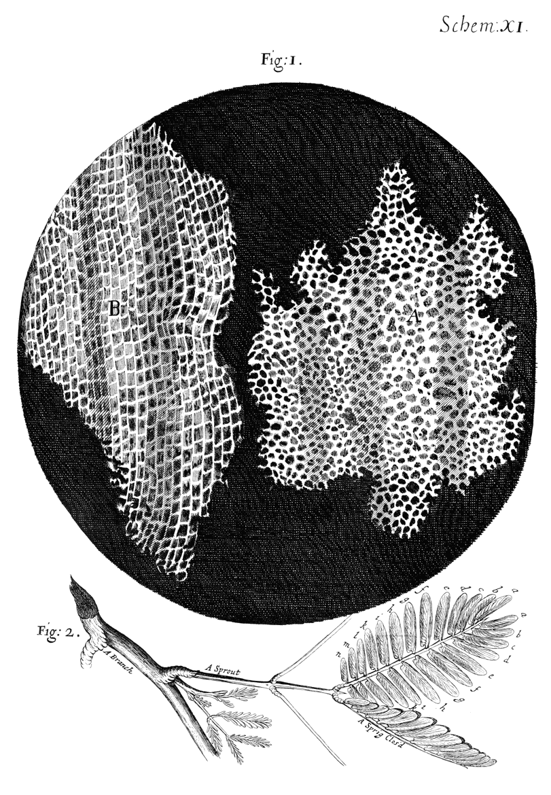

细胞是生命活动的基本单位
本期导读
细胞学说 · 归纳法 · 生命系统

视频原话 · 导读3 句
- 同学们好！这节课梳理人教版必修一第一章第一节——细胞是生命活动的基本单位。8.0s
- 高考常考细胞学说的建立过程和意义、归纳法，以及生命系统的结构层次。7.4s
- 我们按六个考点梳理，每个考点都讲清楚怎么考、怎么做。5.5s
细胞学说的建立01#
1
维萨里
比利时
人体结构
器官水平
器官水平
2
比夏
法国
器官由
组织构成
组织构成
3
胡克
英国 1665
观察软木
命名细胞
（死细胞）
命名细胞
（死细胞）
4
列文虎克
荷兰
观察到
活细胞
细菌、红细胞
活细胞
细菌、红细胞
5
施莱登 施旺
德国 19世纪30年代
建立
细胞学说
细胞学说
6
魏尔肖
德国
细胞通过
分裂产生
新细胞
分裂产生
新细胞
易错
胡克看到的是死细胞（细胞壁围成的小室），只是命名者；细胞学说的建立者是施莱登和施旺
视频原话6 句
- 考点一，细胞学说的建立过程。比利时的维萨里揭示了人体在器官水平的结构，法国的比夏指出器官由组织构成。11.1s
- 1665年，英国的胡克观察软木薄片，看到许多“小室”，把它们命名为细胞。9.1s
- 荷兰的列文虎克用自制显微镜观察到了细菌、红细胞和精子等活细胞。7.0s
- 十九世纪三十年代，德国的施莱登和施旺分别研究植物和动物，建立了细胞学说。7.8s
- 后来，德国的魏尔肖总结出：细胞通过分裂产生新细胞。5.9s
- 易错：胡克看到的是死细胞，只是细胞的命名者；细胞学说的建立者是施莱登和施旺。8.4s
细胞学说的内容02#
1
细胞是一个有机体，一切动植物都由细胞发育而来，并由细胞和细胞产物所构成
2
细胞是一个相对独立的单位，既有它自己的生命，又对与其他细胞共同组成的整体生命起作用
3
新细胞是由老细胞分裂产生的
在魏尔肖“细胞通过分裂产生新细胞”的基础上修正补充
易错
说的是一切动植物，不是一切生物：病毒没有细胞结构，细菌等原核生物也不在细胞学说的论述范围内
视频原话5 句
- 考点二，细胞学说的主要内容，一共三点。4.3s
- 第一，细胞是一个有机体，一切动植物都由细胞发育而来，并由细胞和细胞产物所构成。8.4s
- 第二，细胞是一个相对独立的单位，既有它自己的生命，又对与其他细胞共同组成的整体生命起作用。9.1s
- 第三，新细胞是由老细胞分裂产生的，这一点是在魏尔肖的观点基础上修正补充的。7.9s
- 易错：细胞学说说的是一切动植物，不是一切生物——病毒没有细胞，细菌等原核生物也不在其中。9.6s
细胞学说的意义03#
- 动植物都由细胞构成
- 揭示 →动物和植物的统一性
- 阐明 →生物界的统一性
- 器官、组织水平
- 进入 →细胞水平
- →为分子水平打下基础
揭示了
生物界的统一性；为生物进化论的确立埋下伏笔（生物可能有共同祖先）
没有揭示
生物界的多样性；动植物细胞的区别；原核细胞和病毒
易错
见到“揭示了多样性”“揭示了动植物细胞的差异”就是错误说法——细胞学说讲的只有统一性
视频原话4 句
- 考点三，细胞学说的意义。它揭示了动物和植物的统一性，从而阐明了生物界的统一性。8.3s
- 它使生物学研究由器官、组织水平进入细胞水平，并为后来进入分子水平打下基础。8.6s
- 它还为生物进化论的确立埋下了伏笔：既然都由细胞构成，生物之间就可能有共同的祖先。8.4s
- 考法：判断说法是否正确。易错：细胞学说没有揭示多样性，也没有揭示动植物细胞的区别。9.5s
完全与不完全归纳04#
归纳法：由一系列具体事实推出一般结论的思维方法
完全归纳法
考察了某类事物的全部对象
结论可信
不完全归纳法
只考察了部分对象
结论可能有例外，但可用于预测和判断
施莱登、施旺：观察了部分动植物 → 一切动植物都由细胞构成 ＝ 不完全归纳法
解题方法
看是否考察了全部对象：没有穷尽的就是不完全归纳法；科学研究中经常运用不完全归纳法
视频原话5 句
- 考点四，科学方法——归纳法。归纳法是由一系列具体事实推出一般结论的思维方法。8.6s
- 完全归纳法，是考察了某类事物的全部对象后得出结论，结论是可信的。6.9s
- 不完全归纳法，只考察了部分对象就得出结论，结论可能有例外，但可以用来预测和判断。8.4s
- 施莱登和施旺只观察了部分动植物，就得出一切动植物都由细胞构成，用的是不完全归纳法。8.6s
- 解题方法：看是否考察了全部对象——没有穷尽的，就是不完全归纳法。科学研究中经常运用不完全归纳法。10.5s
生命活动离不开细胞05#
单细胞生物
如草履虫、变形虫
一个细胞完成运动、摄食、繁殖等全部生命活动
一个细胞完成运动、摄食、繁殖等全部生命活动
多细胞生物
依赖各种分化的细胞密切合作
如缩手反射、生长发育
如缩手反射、生长发育
病毒
没有细胞结构
必须寄生在活细胞中才能增殖
必须寄生在活细胞中才能增殖
易错
病毒不能用普通培养基直接培养，要用活细胞培养；病毒是生物，但不属于生命系统的任何结构层次
视频原话4 句
- 考点五，生命活动离不开细胞。单细胞生物如草履虫，一个细胞就能完成运动、摄食、繁殖等全部生命活动。10.7s
- 多细胞生物依赖各种分化的细胞密切合作，比如缩手反射需要多种细胞协调配合。7.9s
- 病毒没有细胞结构，但它必须寄生在活细胞中才能增殖。5.6s
- 易错：病毒不能用普通培养基直接培养，要用活细胞培养；病毒是生物，但不属于生命系统的任何层次。10.0s
生命系统结构层次06#
- 细胞
- →组织
- →器官
- →系统
- →个体
- 种群
- →群落
- →生态系统
- →生物圈
- 最基本：细胞；最大：生物圈
- 植物没有“系统”层次；单细胞生物的一个细胞＝细胞层次＋个体层次
- 种群：一定区域同种生物的所有个体；群落：所有生物；生态系统：群落＋无机环境
解题方法
抓关键词：同种→种群，所有生物→群落，再加无机环境→生态系统；“池塘里所有的鱼”两者都不是
视频原话5 句
- 考点六，生命系统的结构层次：细胞、组织、器官、系统、个体、种群、群落、生态系统、生物圈。10.8s
- 细胞是基本的生命系统，是最基本的层次；生物圈是最大的生命系统。6.8s
- 植物没有“系统”这一层次；单细胞生物的一个细胞，既是细胞层次，又是个体层次。7.6s
- 一定区域内同种生物的所有个体是种群；所有生物是群落；再加上无机环境就是生态系统。8.5s
- 考法：判断实例属于哪个层次。解题方法：抓关键词——同种是种群，所有生物是群落；“池塘里所有的鱼”两者都不是。11.6s
易错速查✓
先自己判断，再点按钮查看对错与解析。
- 1细胞学说是由胡克建立的说法错误：主要由施莱登和施旺建立，胡克是细胞的命名者
- 2细胞学说揭示了生物界的统一性和多样性说法错误：只揭示了统一性，没有涉及多样性
- 3“新细胞是由老细胞分裂产生的”是魏尔肖的补充说法正确。
- 4施莱登和施旺运用了完全归纳法说法错误：运用的是不完全归纳法
- 5病毒没有细胞结构，所以生命活动与细胞无关说法错误：病毒只能寄生在活细胞中才能增殖
- 6一棵松树具有的生命系统层次中没有“系统”说法正确。
记准人名和年代，分清统一性与多样性！
视频原话 · 易错速查5 句
- 最后，用六道判断题检验一下。3.6s
- 判断一？错，细胞学说主要由施莱登和施旺建立。判断二？错，只揭示了统一性。9.3s
- 判断三？对。判断四？错，他们用的是不完全归纳法。6.7s
- 判断五？错，病毒必须寄生在活细胞中。判断六？对，植物没有系统层次。8.9s
- 六个考点串成一条线：记准人名和年代，分清统一性与多样性。我们下期再见！8.0s
图片来源
图片来源：Wikimedia Commons —— Robert Hooke《Cork Micrographia Hooke》Public domain
Robert Hooke, Micrographia (1665), Public domain